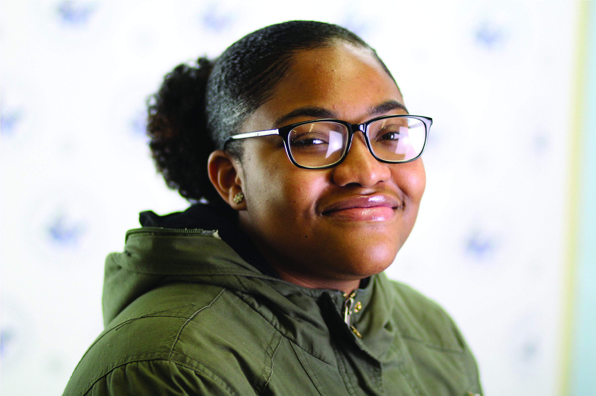

a look at the artist
My name is Aaliyah Gayle, I am a 19-year-old art student from New York. I have been pursuing and creating art for several years now, having begun in high school. I am someone who is not good with words or speeches so I let my work speak for myself. Outside of art, I adore sneakers, music, and matching socks.
My future goals are to become a professional graphic designer, working for a big company and eventually opening up my own graphic design company.
Interested in me or have any questions: Email: aaliyahgayle2002@gmail.com Instagram: @yellowcoloredsocks